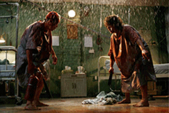

Column
April 7, 2015
A Film Bizarre Beyond Belief: Praise Zardoz!
Movies like Zardoz encounter a specific pitfall: they appear so weird on the surface that digging any further seems fruitless. This is a BIG mistake.
Column
April 7, 2015

Killer Mushrooms on the Dark Side of the Sun
John Zorn's Dark Side of the Sun film series continues at the Japan Society with a screening of Matango (aka Attack of the Killer Mushrooms).
Column
April 7, 2015
Of
Hungry Cannibals & Murderous Children: George A. Romero
An icon of independent horror cinema, George A. Romero changed the genre forever in 1968, a Pittsburgh filmmaker who became a midnight movie icon.
Column
April 7, 2015
How Tim and Eric Carved a Niche in Cathode Ray Hell
Love them or hate them, at some point in time Tim and Eric have probably made you queasy.
Column
April 7, 2015
Facebook Pulp: The Cult of CHARLIE CASANOVA
CHARLIE CASANOVA was assembled on Facebook. Learn the backstory of this chilling slice of Midnight Pulp.
Column
April 7, 2015
Sweetly Sleazy: Pink Film at NYC's Japan Society
Bondage, torture, and violence are all common themes in Japanese pink films, making this delightful story an even sweeter surprise than you might expect.
Column
April 7, 2015
Giallo’s Tangled Family Tree of Death and Debauchery
Discover the glorious, gory world of Giallo, one of the greatest genres in pulp film history.
Column
April 7, 2015
Long Live the Hollywood Flesh: Cronenberg Meets Tinseltown
Cronenberg has made some of the most disturbing and cerebral pulp films ever known to midnight moviegoers. Now he's taking on Hollywood with MAPS TO THE STARS.
Column
April 7, 2015
Is The Scream Porn Parody a Legitimately Good Movie?
Eli Cross joins us for an EXCLUSIVE interview to finally lay to rest nagging uncertainties, and lay bare the story behind the making of his only porn parody.